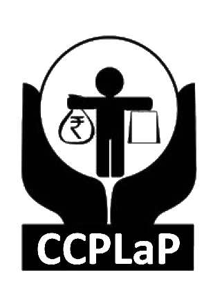

Trade and commerce have crossed all barriers-local, national and supra- national. With trade and commerce, comes a host of problems associated with it- legal, social and ethical. The products and services, which make up the foundation for such trade and commerce create innumerable consumers, many of whom are dissatisfied with those products and services, around the world. The quality and standards of these products and services have a profound influence on the rights of the consumer and hence need to be ensured, with all diligence. Consumer protection laws and policy seek to achieve the same and also try to balance the interests of all the stakeholders' involved-consumers, retailers, manufacturers, service providers and intermediaries.
India is no alien to the aforementioned phenomenon of legislative and administrative protection of consumer rights. In fact, India has had a concrete and aggressive policy of consumer protection even before its patent acceptance of globalisation in the 1990s.
There are very few areas of law that demand more attention than consumer protection in the present day scenario, since the definition of the term 'consumer' and the magnitude of rendering of service and commercial activity nowadays ensure that there is a steady supply of complaining consumers and defensive manufacturers and service providers
It is well recognised world over, that protection of Consumer's right not only promotes the interests of business but also of the state as well.To give boost to the efforts of the Government in the area of consumer protection and consumer welfare, a centre exclusively dedicated to consumer protection law and policy was created at NUALS.It is the realisation that a vibrant and economically superior India depends on a 'rights-aware' consumer that has resulted in the creation of the Centre for Consumer Protection Law and Policy (CCPLaP); especially in the wake of lack of sufficient number of research centres in this area. The Centre is established to develop research and educational programs in the areas of law governing and relating to consumer rights. The Centre, it is sincerely expected, would be unique and would serve as a path breaker not just on account of the multitude and variety of its activities, but also owing to its objectives and methodology.
OBJECTIVES:
To promote the study of consumer rights in a dynamic and critically aware fashion, thereby engaging the interest and excitement of the scholarly community, consumer rights practitioners, and the wider public;
To act as an educational and scholarly bridge, connecting the aspirations of the consumer rights community and of consumer rights activists with the worlds of academe, of economics, politics and of business;
To promote an integrated system of research, training, information and documentation activities in the field of consumer rights;
To facilitate national and international collaboration between high-level internationally recognized researchers and the teaching staff of the University;
To foster research and to contribute to the development of a study plan concerning consumer rights, democracy and peace for use in the programmes of the University and other higher education institutions of India, by forming a national focal point for the activities in this field.
To develop the University and the proposed Centre as a centre of excellence in Consumer Protection Law and Policy and to provide a common platform for various local and national bodies/organisations working in the same field to operate on a joint basis.
